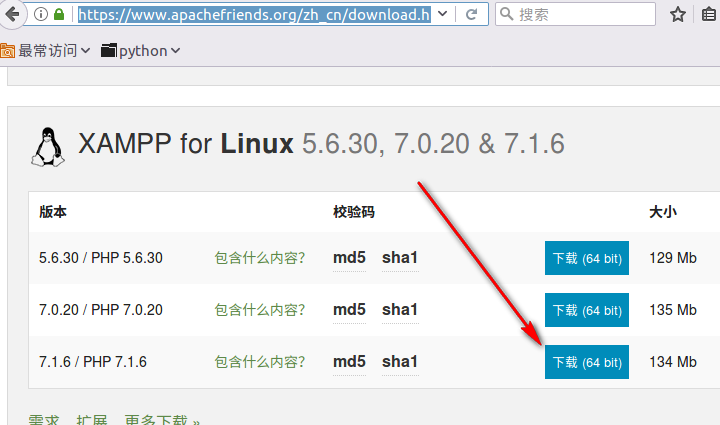
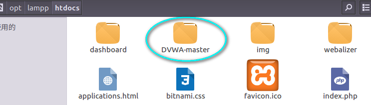
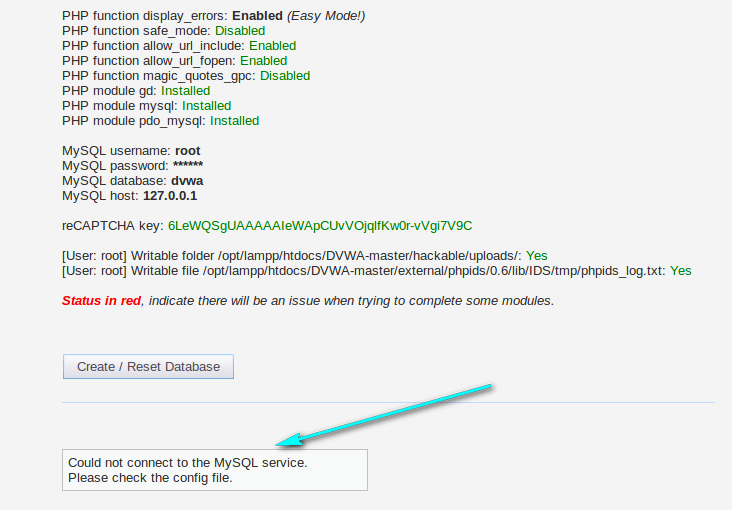

我是如何从Google窃取你的照片的-我的3个Google漏洞赏金报告分享
安全是一个非常宏大的主题，在找到第一个漏洞之前，您不能确定您拥有安全人员所需的知识、运气和耐心。作为一个新手，加入漏洞赏金猎人俱乐部是件很困难的事，在这里，让我和你分享我的故事。
邀请欺诈
我的第一个漏洞是意外发现的，就在我试图和老师共享一个Google电子表格程序时。当时，我发送共享邀请到他的非Gmail电子邮件地址，然后用e-mail将链接发给他。当然，他无法访问它……幸运的是，Google非常强大，在这种情况下（当您试图打开一个不与您共享的文档时），曝出的错误消息下面有一个Request access 按钮，其功能是向共享文件所有者发送电子邮件，其中包含的链接如下：
https://docs.google.com/spreadsheets/d/cmFuZG9t_c3ByZWFkc2hlZXQ_aWQ/edit?usp=sharing_erp&userstoinvite=billgates@microsoft.com
如果共享文件所有者打开上面的链接，则会加载文档，并弹出一个“与其他人共享”模式，该模式自填充了一个来自URL的电子邮件地址：

我的第一个想法是“嗯……用户的输入反映在DOM中——我应该尝试XSS吗？但我的第二个念头立刻涌现：“我决不是第一个发现这点的人。”这是谷歌，世界上有很多比我更聪明的人一直在尝试攻击它。我不会把时间浪费在XSS上…”
你可以称我为悲观主义者，但是我最近读过一些关于Google XSS漏洞的文章，我知道找到XSS的难度有多大。但是，这个url的其他一些东西引起了我的注意……参数的名称是userStoinvite，而不是usertoinvite，这意味着这个url可以用来同时邀请更多的用户，对吧？
我开始测试这个参数，并且很快发现，如果我用逗号分隔多个电子邮件地址并添加到url中，那它们将都出现在表单中。就像你想给多个收件人发邮件一样……现在，让我看看如果我指定一个名字而不是电子邮件地址时会发生什么：
https://docs.google.com/spreadsheets/d/cmFuZG9t_c3ByZWFkc2hlZXQ_aWQ/edit?usp=sharing_erp&userstoinvite=Bill Gates<billgates@microsoft.com>
它正如我所预期的那样——表单中显示的是名字而不是地址，只有当您将鼠标移到名称时才会显示真正的电子邮件地址。

这会带来什么问题？
如果使用伪造的电子邮件地址代替你的姓名，则可以设计一个分享邀请欺诈，欺骗没有防范经验的用户允许你访问他的文件。攻击场景：
您不再为公司工作，对重要电子表格的访问权限被撤销，但是您仍然知道访问的URL（例如，在浏览器历史中）
用老板的电子邮件地址给秘书/会计发送一个虚假的共享邀请链接
等待直到他们打开链接并允许您访问文件
时间线： 2017.10.03-漏洞报告 2017.10.03-漏洞由安全工程师验证（P4->P3） 2017.10.10-500美元奖金 2018.01.16-漏洞修复
从你的谷歌驱动中获取照片
在我发现第一个漏洞后，我的感觉好坏参半。一方面，我感到非常自豪和高兴，因为我在谷歌发现了一个安全问题，我也真的很感激这笔奖金。另一方面，我对自己并不满意，因为任何人只要运气好发过这样一封邮件，就会发现这个漏洞——我觉得我可以做得更好。但是从哪里开始呢？我敢肯定使用自动化工具会浪费时间，因为我认为其他人已经做过很多次，我想尝试一些不同的东西。我想我对web的基本概念（如SOP和CORS）有很好的理解，因为我真的爱上了Chrome Dev工具，所以我决定开始在JS文件中寻找不安全的API接口或敏感数据。我的代码如下：
for webapp in literally_every_online_google_product_I_have_found:
devtools.open()
devtools.select_tab('network')
for button in webapp:
button.click()
for request, response in devtools.requests:
request.analyze_manually()
response.analyze_manually()
整个过程又长又无聊。我花了下午和晚上阅读发起的网络请求和回复，但没有成功。我甚至不记得我尝试过多少不同的测试：
“也许这个CSS存在一些漏洞……那些字体如何？” “好的，如果我用另一个帐户的cookie回放这个请求会咋样？”“ “嗯，我可以在这里上传SVG。是时候测试一些XSS了”。
最后我关注了Drive和Google Docs系列应用，因为它们是相互连接的（Docs可以访问您的文件），很流行（因此出现安全缺陷就意味着严重安全威胁），并且它们有很多特性和设置。我首先注意到的是，Slides确实类似于文档和表格，但是它在不同的情况下了使用了不同的（遗留？）API接口。例如，当从我的驱动器插入一张图像时会触发这两个请求：
curl 'https://docs.google.com/presentation/d/pReS3nTaT10N_1D/copyimages?id=bG9s_Y2hlY2tvdXR0aGlz_dDY4UkV1MEh3Qnc' --data 'photo=bG9s_Y2hlY2tvdXR0aGlz_dDY4UkV1MEh3Qnc'
{"bG9s_Y2hlY2tvdXR0aGlz_dDY4UkV1MEh3Qnc":"MDRjYWVhO-QtYjc0Ny00NDdkLWJlODctZ-VmNzVkOTI1YTkw"}
---
curl 'https://docs.google.com/presentation/d/pReS3nTaT10N_1D/renderdata?id=bG9s_Y2hlY2tvdXR0aGlz_dDY4UkV1MEh3Qnc' --data 'cosmoId=MDRjYWVhO-QtYjc0Ny00NDdkLWJlODctZ-VmNzVkOTI1YTkw'
{"r0":"https://lh6.googleusercontent.com/dmVyeXZlcnl2ZXJ5dmVyeXZlcnl2ZXJ5dmVyeXZlcnl2ZXJ5dmVyeXZlcnl2ZXJ5dmVyeXZlcnl2ZXJ5dmVyeXZlcnl2ZXJ5dmVyeXZlcnl2ZXJ5bG9uZ3N0cmluZw"}
你应该也注意到，第一个响应包含有"ID_OF_THE_IMAGE":"SOME_RANDOM_ID", 而“SOME_RANDOM_ID”出现在第二个倾请求的cosmoId参数的值中。而且，第二个响应也包含图片链接。
我真的不明白使用两个API接口处理图像的原因，感觉有点过于复杂——这就是为什么我认为Slides有一些值得关注的遗留问题。接下来，我用不同的cookie回放了上面的这些请求。
幸运的是，这些接口缺乏权限控制，所以只要添加一个有效的谷歌会话cookie，我可以从任何驱动器得到任何图片的URL（如果我有文件的ID）！
这听起来很酷，但事实是这些图像ID是很长的，并且包含大小写字符。这就是为什么我想不出什么可怕的攻击场景，这也是这个漏洞奖励相对较低的原因。
时间线： 2017.11.27-漏洞报告 2017.12.09-漏洞由安全工程师验证（P3->P1） 2018.01.09-500美元奖金 2018.01.16-漏洞修复
在模拟环境中，您可以看到这个漏洞是如何工作的（https://platform.avatao.com/challenges/630fa4fc-3138-4805-bd78-ea85e492c2e2）。
请登录后给我你的照片
在这两次漏洞之后，我休息了一段时间，因为我觉得我已经用尽了所有的运气，需要一些时间来恢复。在五月，我决定再尝试试一次，在3个小时内，我发现了一个可怕的漏洞。我认为这个漏洞太强了以至于不可能是真的，所以我在报告它之前检查了三四次。
在我第一次安全测试时，不知何故我跳过了Google Photos，所以这次我用我的老方法开始集中精力寻找它的漏洞。
“网络”选项卡上没有什么值得注意的地方，但“共享库（自动与伙伴共享照片）特性”看起来很有希望。如果你想建立合伙人账户，你必须先输入合伙人的电子邮件地址。提交之后，会出现一个带有Google帐户登录页面的弹出窗口。最后，您需要输入您的登入凭证，然后您的照片将被共享，并且您将被重定向到仅包含“成功消息”以及一个“关闭窗口”按钮的页面。弹出窗口的过小使我无法看到整个URL，所以我把它复制到记事本以便进一步研究：
// URL before login
https://accounts.google.com/signin/v2/sl/pwd?passive=801337085&osid=1&continue=https%3A%2F%2Fphotos.google.com%2Finitps%3Frequest%3DW1tudWxsLCIxMjU4NzQyNzU5MTIzOSJdLG51bGwsImUtbWFpbEBleGFtcGxlLmNvbSIsbnVsbCxbMixudWxsLCJXVzkxSUhKbFlXeHNlU0JzYVd0bElfR1JsWTI5a2FXNW5JSEpoYm1SdmJTQmlZWE5sTmpRZ2MzX1J5YVc1bmN5QXRJR1J2YmlkMElIbHZkVDgiXV0.
// URL after login
https://photos.google.com/initps?request=W1tudWxsLCIxMjU4NzQyNzU5MTIzOSJdLG51bGwsImUtbWFpbEBleGFtcGxlLmNvbSIsbnVsbCxbMixudWxsLCJXVzkxSUhKbFlXeHNlU0JzYVd0bElfR1JsWTI5a2FXNW5JSEpoYm1SdmJTQmlZWE5sTmpRZ2MzX1J5YVc1bmN5QXRJR1J2YmlkMElIbHZkVDgiXV0.
显然，在continue参数被编码包含在第二个URL中，乍一看，request的值只是一组随机字符，末尾跟有一个点。这个点好像没有任何意义——为什么它只出现在最后，像填充物一样？如果它是一个等号，那么‘request’的值很可能就是一个经过ba se64编码的字符串……所以我修改了它，并将修改后的字符串粘贴到一个ba se64解码器中，看看这段字符串的明文是啥：
[[null,"12587427591239"],null,"e-mail@example.com",null,[2,null,"WW91IHJlYWxseSBsaWtlI_GRlY29kaW5nIHJhbmRvbSBiYXNlNjQgc3_RyaW5ncyAtIGRvbid0IHlvdT8"]]
我把其中的电子邮件改成了我自己的（不修改其他值），然后重新编码，并用点替换了最后的等号。并在我登录我的第二个帐户之后打开这个精心编制的URL，照片立刻被和第一个帐户共享。最棒的是，我甚至没有收到任何警告/通知/电子邮件。我迫不及待的想进一步分析漏洞。并且测试如果你直接访问第二个URL会发生什么——您甚至不需要登录就可以与攻击者共享您的图片，因为只要向发送第二个URL的GET请求就足够了。
时间线： 2018.05.12-漏洞报告 2018.05.14-漏洞由安全工程师验证（P4->P2，P2->P1） 2018.05.22-3133.70美元奖金 2018.08.22-漏洞修复
尝试使用我们的模拟环境，可以更好地理解这种漏洞。（https://platform.avatao.com/challenges/e069a6c1-8265-4115-9126-f8e188c62765）
最难的部分是不知道我们的目标是啥，这在大多数其他的漏洞悬赏项目中也一样。我从这些情况中得到的启发是，不要把自己局限于特定的漏洞，比如XSS或SQLi。要睁大眼睛，富有创造力。
关于作者
Gergő是Avatao团队的第一批成员之一，现在他是我们最好的软件工程师之一。在大学，他对网络安全开始感兴趣并延续至今。他在Avatao平台上开发漏洞环境，同时还负责指导其他开发者。当然，空闲时他也会寻找漏洞。
原文：https://blog.avatao.com/How-I-could-steal-your-photos-from-Google/
enigmagroup入门挑战-基础1
基础1题目地址
1、右键查看源码
2、ctrl+f查找passw
3、注释里面说了：<!-- the first levels are easy, the password is 39f13b -->
从零开始的DVWA之环境搭建
文章写于2017年7月6日，很久之前的东西了。
0X01 主机配置
操作系统：Ubuntu-Kylin-16.04-LTS_x64（VritualBox虚拟机）
相关组件：XAMPP+DVWA
0X02 DVWA简介
DVWA是一个用来进行安全脆弱性鉴定（练习挖洞）的PHP/MySQL应用。旨在帮助安全爱好者（黑客白客红客白帽子黑帽子绿帽子等）测试自己的专业技能和工具提供合法的环境（不要瞎搞别人网站，这样不好...），提升技术能力的同时更好的维护比特世界的和平。
0X03 XAMPP简介
XAMPP（Apache+MySQL+PHP+PERL）是一个功能强大的建站集成软件包。这个软件包原来的名字是 LAMPP，但是为了避免误解，最新的几个版本就改名为 XAMPP 了。由于DWVA需要PHP环境，嗯，就由XAMMP来守护了。
0X04 XAMPP和DVWA安装
首先访问官网 https://www.apachefriends.org/zh_cn/download.html 然后点击下载：

接着就会弹个框：

去一趟茅房回来就下完了，你要是嫌弃7下的太慢，可以去下5.6，速度会快些，接着就是安装。
安装过程如下（记得加权限，然后）：

 一直点击next就行了……
一直点击next就行了……
 这里告诉我们XAMPP被安装在/opt/lampp文件（linux一切皆文件）里面。最后点击Finish就完成了安装。
这里告诉我们XAMPP被安装在/opt/lampp文件（linux一切皆文件）里面。最后点击Finish就完成了安装。
启动XAMPP
#cd /opt/lampp
#./manager-linxu-x64.run
或者
#/opt/lamp/./manage-linux-x64.run

下面我们开始安装DWVA：
首先我们登录官网 http://www.dvwa.co.uk/ 点击DOWNLOAD下载最新版的DWVA，是一个zip文件。

然后将文件解压（提取）到/opt/lamp/htdocs/目录下


接着我们打开XAMPP的MySQL（默认只开了Apache）

然后访问 http://localhost/DVWA-master/index.php 诶!?报错

嗯，根据报错信息可知是配置文件有问题（废话啰），同样的根据提示我们知道要将文件名config.inc.php.dist改为config.inc.php（这里其实涉及到一个linux命令copy的用法，具体可自行百度： http://www.linuxdiyf.com/viewarticle.php?id=38590 ）。改完名字之后就可以访问了，页面会自动跳转到： http://localhost/DVWA-master/setup.php 。然后我们用gedit打开这个文件config.inc.php看看是个什么东西，(⊙o⊙)哦原来是配置文件（废话连篇有木有），我们修改两个地方（1、数据库密码，我知道玩lol的你输入这个密码肯定飞快，不过我是玩dota的。2、安全等级设置为low，简单点容易玩，默认是难的。）

打开之后长这样：

怎么玩呢？我不知道啊，于是我瞎点了几下，

MMP又报错了，根据提示我们知道问题出在red部分,嗯，我们去修改一下所有带红色的地方的配置。
1、搞定PHP function allow_url_include：Disabled
找到php的配置文件，修改allow_url_include=Off 为allow_url_include=on（参考http://php.net/manual/zh/filesystem.configuration.php#ini.allow-url-include）

然后修改/opt/lamp/etc/php.ini

2、解决reCAPTCHA key，配置文件里面有个谷歌连接，点进去剩下的估计你也看得懂应该知道该怎么做额。


3、解决最后的两个NO

我们给这两个文件加权，运行命令：

然后点击

纳尼!?

只好回头再看看XAMPP的数据库配置文件，你会发现他的password默认是被注释了，我们取消注释。

最后你会发现不管怎么搞还是报错……这就尴尬了……
经过尝试，我发现以下配置可以进入登录界面。
XAMPP配置如下：

密码还是按照默认的注释掉

DVWA配置如下：

接着你就能进入登录界面了。恭喜！
http://localhost/DVWA-master/login.php

输入账号密码然后登录就能愉快的玩耍了。

什么？你进不去？账号密码是什么？预知后事如何，请听下回分解。
下集预告：
欢迎来到DVWA的世界，这是你的第一关，登录破解……
同源策略
摘自网络，出处忘了。
同源策略（SOP，Same Origin Policy），两个页面的【协议】【域名】【端口】都相同，则两个页面具有相同的源，任何一个不同都是不同源的。
举例：
假设源是：http://store.company.com/dir/page.html
同源的是：
http://store.company.com/dir2/other.html
http://store.company.com/dir/inner/another.html
不同源的是：
https://store.company.com/secure.html 不同协议 ( https和http )
http://store.company.com:81/dir/etc.html 不同端口 ( 81和80)
http://news.company.com/dir/other.html 不同域名 ( news和store )
同源策略控制内容
同源策略是禁止读取HTTP回复，并不会禁止脚本执行，也不会禁止HTTP请求，因此在防御CSRF上作用是非常有限的，因为CSRF在请求发出的时候就已经达到了攻击的目的。 一般情况下，静态资源通常不受同源策略限制，如有js/css/jpg/png等。
同源策略控制了不同源之间的交互，例如在使用XMLHttpRequest或img标签时则会受到同源策略的约束，这些交互通常分为三类。
- 通常允许跨域写（Cross-origin writes），例如链接（links），重定向以及表单提交。少数特定的HTTP请求需要添加"预检请求"preflight如OPTIONS来查询可用的方法。
- 通常允许跨域资源嵌入（Cross-origin embedding）
- 通常 不允许 跨域读（Cross-origin reads），但常可以通过内嵌资源来巧妙的进行读取访问。例如可以读取嵌入图片的高度和宽度，调用内嵌脚本的方法，或availability of an embedded resource
下面是可能嵌入跨域资源的示例：
<script src="..."></script> 标签嵌入跨域脚本。语法错误信息只能在同源脚本中捕捉到。
<link rel="stylesheet" href="..."> 标签嵌入CSS。由于CSS的松散的语法规则，CSS的跨域需要一个设置正确的Content-Type 消息头。不同浏览器有不同的限制： IE, Firefox, Chrome, Safari (跳至CVE-2010-0051)部分 和 Opera。
<img>嵌入图片。支持的图片格式包括PNG,JPEG,GIF,BMP,SVG,...
<video> 和 <audio>嵌入多媒体资源。
<object>, <embed> 和 <applet> 的插件。
@font-face 引入的字体。一些浏览器允许跨域字体（ cross-origin fonts），一些需要同源字体（same-origin fonts）。
<frame> 和 <iframe> 载入的任何资源。站点可以使用X-Frame-Options消息头来阻止这种形式的跨域交互。

Copyright © 2015 Powered by MWeb, Theme used GitHub CSS.